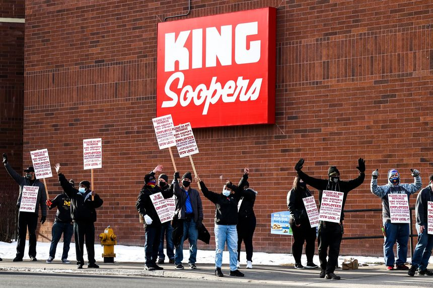
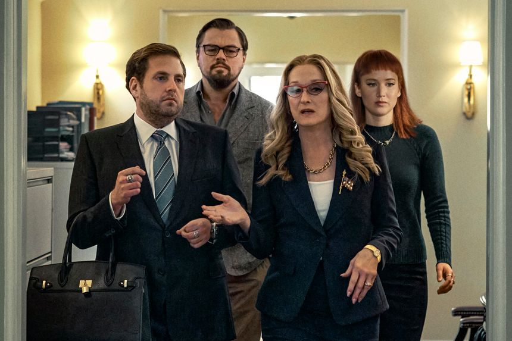
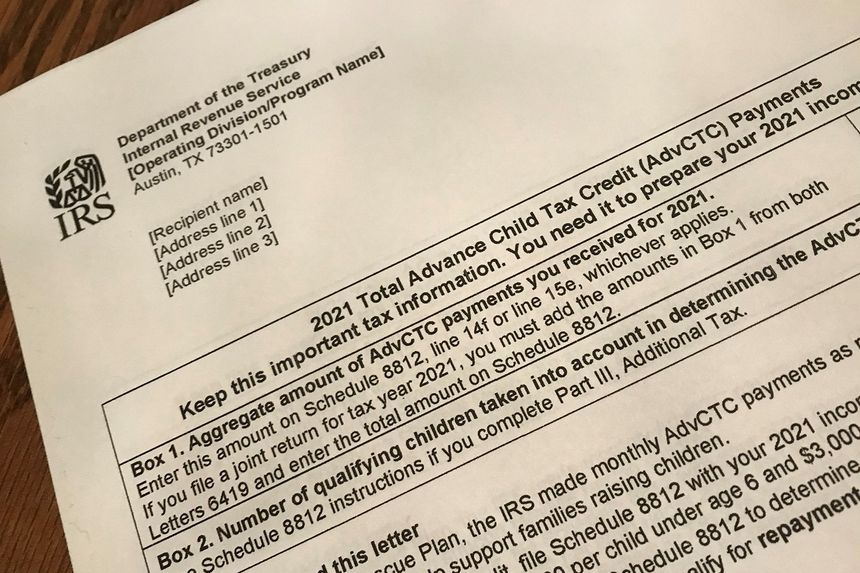
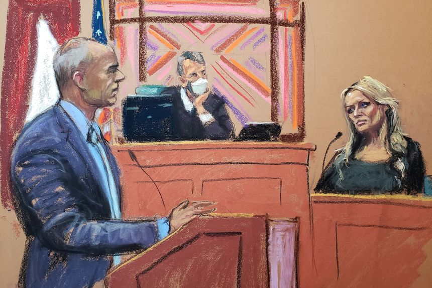
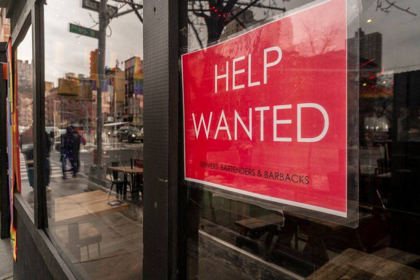
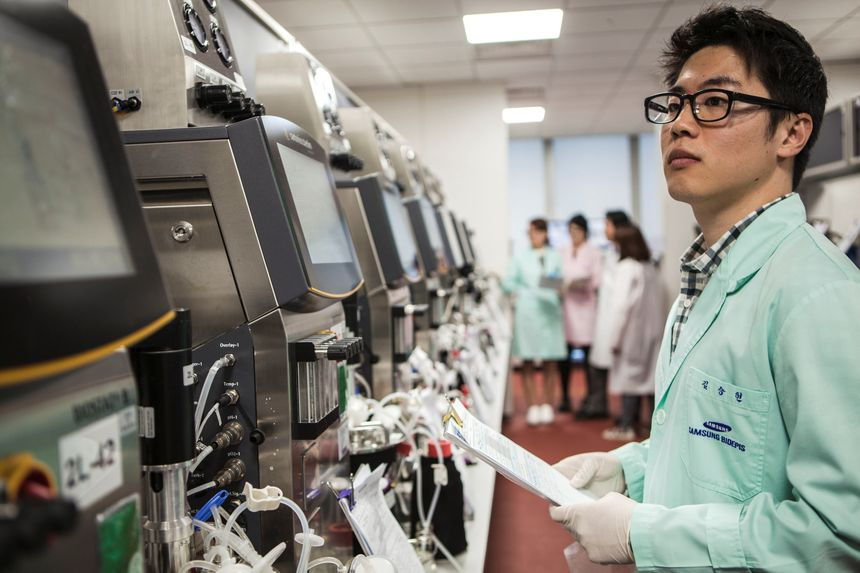
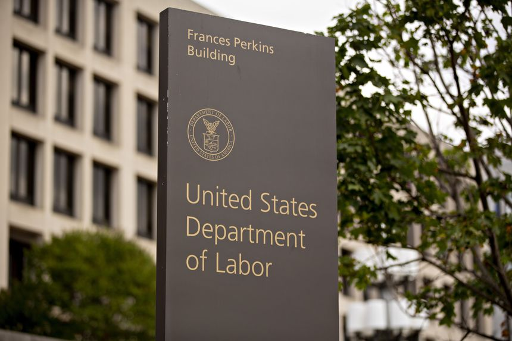
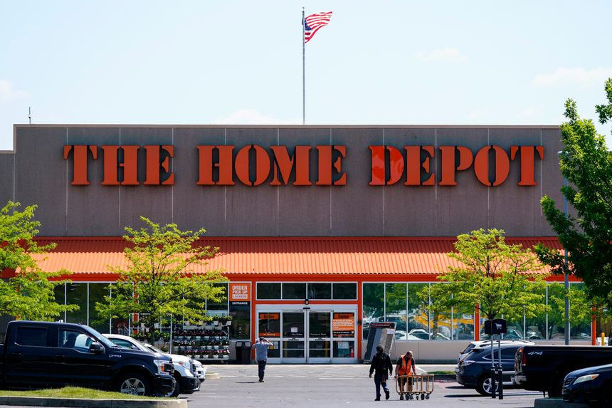
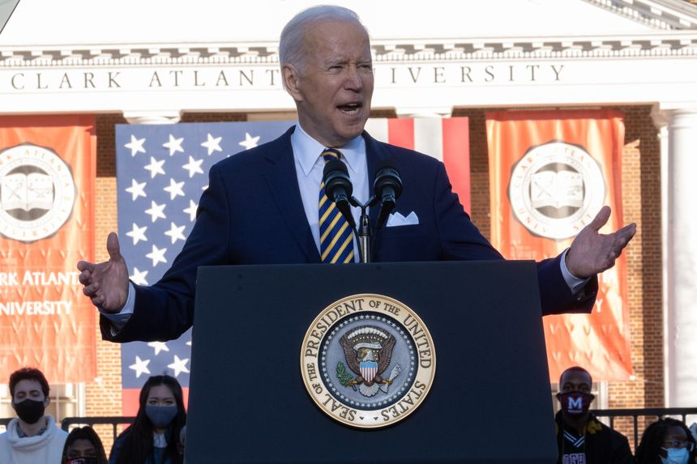
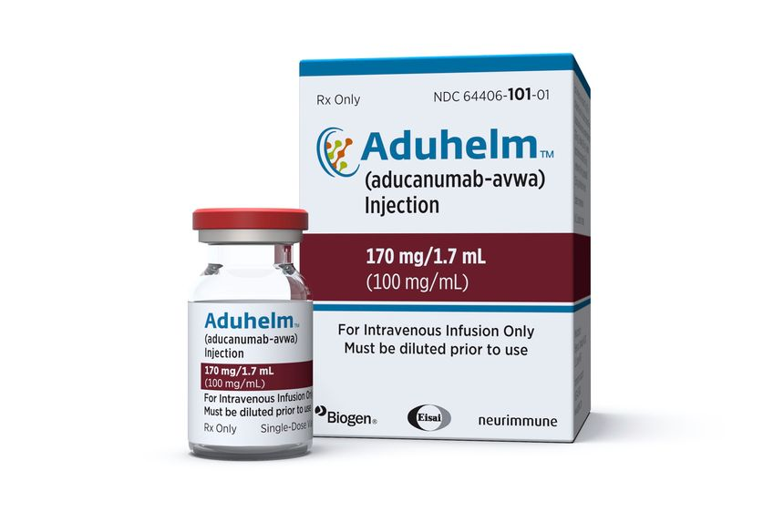

| 时间 | 分类 | 标题 | 副标题 | 正文 | 图片 |
|---|---|---|---|---|---|
| 2022-01-28 19:31:00 | Markets | Whirlpool, Kroger, Apple: Stocks That Defined the Week | Here are seven major companies whose stocks moved on the week’s news | Whirlpool Corp. Good luck finding a new fridge. Order backlogs are growing for appliance maker Whirlpool and construction equipment maker Caterpillar Inc., as manufacturers face supply-chain issues and Covid-fueled staffing problems. Not all manufacturers are in this position. While respirator manufacturer 3M Co. struggled to meet demand early in the pandemic, supplies of high-quality face masks have improved since the company boosted production. Whirlpool shares lost 3.8% Thursday. |
 |
| 2022-01-28 19:19:00 | U.S. | Alabama Asks Supreme Court to Reinstate New Congressional Map | Case seen as preview of intense year of election litigation | WASHINGTON—Alabama on Friday asked the Supreme Court to reinstate the new congressional map its Republican-controlled legislature drew to reflect 2020 census data after a lower court blocked its use for discriminating against Black voters. The emergency appeal is a preview of what is expected to be another intense year of election litigation, especially with nationwide redistricting in light of the 2020 census. Many states also are considering changes to their voting rules based on their experiences conducting the 2020 election during the pandemic. |
|
| 2022-01-28 18:47:00 | Opinion | Race, Gender and the Supreme Court | Criticism of Biden’s forthcoming black woman nominee isn’t ‘racially tinged.’ | President Biden hasn’t yet chosen his nominee to replace Stephen Breyer on the Supreme Court, but already any criticism is being ruled off-limits by the progressive auditors of political debate. Witness the assault on Ilya Shapiro, a legal commentator, for daring to challenge Mr. Biden’s pledge to choose his nominee first and foremost on the basis of gender and race. Mr. Biden pledged during the 2020 South Carolina primary campaign to select a black woman for the Court, as a way to win the support of influential Rep. James Clyburn. The gambit worked. Mr. Clyburn endorsed, Mr. Biden won in the Palmetto State, and he went on to defeat Donald Trump. |
|
| 2022-01-28 18:44:00 | Opinion | Europe Brings a Lawsuit to a Trade Fight | China punishes tiny Lithuania, and the EU sends in the lawyers. | Sometimes we wonder what world European leaders think they’re living in. The European Union on Thursday responded to China’s trade assault against its member state Lithuania by filing a . . . complaint at the World Trade Organization. Talk about bringing a quill pen to a gun fight. The EU said it will challenge China’s “discriminatory trade practices” against Lithuania. “Launching a WTO case is not a step we take lightly. However, after repeated failed attempts to resolve the issue bilaterally, we see no other way forward,” EU trade commissioner Valdis Dombrovskissaid. “The EU is determined to act as one and act fast against measures in breach of WTO rules, which threaten the integrity of our Single Market.” How “determined” does that really sound? |
|
| 2022-01-28 18:42:00 | Opinion | Gigi Sohn’s Business Model | The FCC nominee didn’t tell the full story about a dodgy settlement. | Does an independent agency nominee who has deceived Senators about her business conflicts deserve to be confirmed? That’s a question Senators need to ask about Federal Communications Commission nominee Gigi Sohn. Ms. Sohn is as progressive as they come on media and broadband competition. But as troubling is her involvement in Locast, an app that captured and retransmitted local broadcast signals over the internet without broadcasters’ permission. Viewers could stream the content for free, though it accepted donations. |
|
| 2022-01-28 18:40:00 | Opinion | The Pittsburgh Bridge Collapse and the Infrastructure Bill | Congress put climate pork ahead of roads and bridges | President Biden couldn’t have picked more grimly ironic timing to visit Pittsburgh to promote the $1.2 trillion infrastructure bill he signed last November. Hours after a snowy bridge in the city collapsed, injuring 10 people, the President promised to fix all of the nation’s 43,000 faltering bridges. “We’re sending the money,” he assured. Sorry, he isn’t. The bill he signed doesn’t have nearly enough money unless his Administration plans to borrow from the Energy Department’s green energy venture-capital fund. The bill includes $40 billion in new funding for bridges, a pittance compared to the $156 billion for mass transit and rail that are bleeding cash due to generous labor agreements and low ridership. Mass transit had already received $70 billion in pandemic relief. |
|
| 2022-01-28 18:14:00 | Opinion | Don’t Listen to ‘Don’t Look Up’ | The Netflix movie’s director ruins a hilarious film to preach about climate change. | I experienced none of the ambivalence that reviewers did with the hit Netflix comedy and cultural phenomenon “Don’t Look Up,” about a comet coming to destroy the Earth and the failure of the media, the public and politicians to deal with it. The characterizations, the gags, the one-liners were a hoot. I can’t remember anything on streaming that bored me less in recent years. |
 |
| 2022-01-28 18:13:00 | Opinion | California Refuses to Learn From Vermont’s Single-Payer Failure | Sacramento’s plan would be even more economically devastating than the one deemed impossible in 2014. | In location, size and population, Vermont and California couldn’t be more different. But eight years after Vermont’s effort to enact a state single-payer healthcare system went over a cliff, California is galloping toward the same precipice. Lawmakers in Sacramento should have learned from Montpelier’s experience. Instead, they seem eager to repeat it. Vermont Gov. Peter Shumlin campaigned on a promise to enact single payer but shelved his plans in 2014. The idea was “just not affordable,” he said after getting a look at the cost to Vermont’s economy. “We were pretty shocked at the tax rates we were going to have to charge.” The single-payer bill pending in the California Legislature goes far beyond the proposals Vermont considered. |
|
| 2022-01-28 18:12:00 | Opinion | If You Got the Child Tax Credit in 2021, You May Pay in 2022 | The temporary expansion led to overpayments, and many families will soon face surprise tax bills. | Millions of American families learned from the Internal Revenue Service this month that they may owe additional taxes for 2021. The reason was they’d received advance payments of the child tax credit last year that may have been too high. These families will now have to submit an additional form with their 2021 income-tax returns and pay whatever they owe (or claim whatever they still have coming). It’s a good lesson in the limitations of the IRS—it isn’t well-positioned to make welfare payments. Although many families were caught by surprise, the potential for discrepancies in the payouts was never a secret. Lawmakers acknowledged it when they increased the credit’s value and authorized advance payments as part of last year’s American Rescue Plan. Knowing that not all the payments would line up fully with their criteria, Congress created a “safe harbor” so that two-parent families with less than $60,000 in income (and lower amounts for other types of households) wouldn’t be held liable for any miscalculations. For the many households not protected by this measure, the time for a reckoning has come. Both they and the IRS will have their hands full. |
 |
| 2022-01-28 18:08:00 | Opinion | Tailgating in the Time of Inflation | No one ever said championship-level food preparation would be easy. | On Sunday in Kansas City’s Arrowhead Stadium, two men with small hands and large hearts will lead their respective teams in a contest to decide who will represent the American Football Conference in the Super Bowl. Outside the stadium in the hours before the game, a friendly competition is expected to produce only winners. But fans will have their hands full overcoming a rare challenge. Two years ago this column lamented that security rules for the Super Bowl prevented Kansas City Chiefs fans from reaching their potential in a game they play better than anyone else: pregame food and frivolity. The NFL’s draconian prohibition on open flames in Super Bowl parking lots severely limited the pregame possibilities. Fortunately at this weekend’s conference championship in their home stadium, Chiefs fans will enjoy the freedom to cook. The challenge is deciding what to cook in a time of surging inflation. |
|
| 2022-01-28 18:02:00 | Opinion | Australia Takes the Initiative in the Pacific | The deteriorating security environment and more pressure from Beijing aren’t only U.S. concerns. | America’s alliance structure in the Pacific has traditionally operated like a bicycle wheel. Washington is the hub, and ties with Australia, Japan, South Korea, the Philippines and Thailand are spokes that keep the whole thing spinning. The key is that U.S. relationships in Asia, unlike Europe, tend to be bilateral—country to country, instead of herded through institutions like the North Atlantic Treaty Organization or the European Union. Some U.S. partners in the Pacific worry about this structure’s long-term stability. It is being squeezed by China from the outside, and there are anxieties over Washington’s long-term reliability as the center. That leaves two options for U.S. allies: connect other spokes to reinforce the structure, or ditch Washington and find a different hub of support. |
|
| 2022-01-28 18:01:00 | Business | EU’s Microchip Plan to Rival U.S. and Asia Takes Next Step | European Chips Act would mobilize funding commensurate with $52 billion proposed in the U.S. | BRUSSELS—Coming European Union legislation to promote microchip development would mobilize funding comparable to the $52 billion proposed in pending U.S. legislation, a senior EU official said. Thierry Breton, European commissioner for the internal market, said the European Chips Act, which he expects to present early next month, would strengthen the bloc’s position in the global semiconductor industry through funding and other support for research and investment. |
|
| 2022-01-28 17:22:00 | Books & Arts | A God Takes a Break From Mischief | In ‘Reclining Pan,’ a repurposed block of marble celebrates the deity’s carnal excesses. | ||
| 2022-01-28 17:12:00 | Markets | Goldman Doubles CEO David Solomon’s 2021 Pay to $35 Million | Bank generated record annual profit, while return on equity was at its highest level since 2007 | Goldman Sachs Group Inc. doubled Chief Executive Officer David Solomon’s pay in 2021 after the Wall Street firm posted a record annual profit. Mr. Solomon received a $35 million pay package for 2021, the bank said in a securities filing Friday. That is up from $17.5 million in 2020, when Goldman cut his pay by $10 million following the bank’s admission that it broke U.S. laws in its dealings with an investment fund at the heart of a global corruption ring. |
|
| 2022-01-28 16:11:00 | U.S. | After Pittsburgh Bridge Collapses, Biden Stresses Need to Invest in Infrastructure | President gives remarks highlighting the roughly $1 trillion bipartisan infrastructure law he signed | PITTSBURGH—President Biden stressed the need to invest in the nation’s infrastructure Friday after a planned visit to Pittsburgh coincided with the collapse of a 50-year-old bridge in the city, injuring 10 people and disrupting a major roadway. “We saw today when a bridge is in disrepair it literally can threaten lives,” Mr. Biden said from a former mill that has been turned into a research and development site. “We’re going to rebuild that bridge, along with thousands of other bridges in Pennsylvania and across the country because it’s in our interest.” |
|
| 2022-01-28 15:56:00 | U.S. | Michael Avenatti Grills Former Client Stormy Daniels in Court | Adult-film actress says Avenatti lied and stole her book payments | Disgraced celebrity attorney Michael Avenatti sought to cast doubt on the testimony of his former client Stormy Daniels at his federal fraud trial Friday, grilling her over previous statements she made about speaking to the dead and living in a haunted house. Mr. Avenatti, representing himself, asked Ms. Daniels, a former adult-film actress and the government’s lead witness in the case, during cross-examination about her time living in a New Orleans house in 2019. |
 |
| 2022-01-28 15:09:00 | World | Pentagon Warns Russia Could Seize Ukrainian Cities, While Kyiv Pleads for Calm | The U.S. defense secretary said Putin has multiple options but that a diplomatic solution remained possible | The Pentagon warned Friday that Russia has amassed sufficient combat power to take cities and substantial swaths of territory in Ukraine, whose leaders warned the U.S. was overstating the Russian threat. “While we don’t believe that [Russian] President [Vladimir] Putin has made a final decision to use these forces against Ukraine, he clearly now has that capability,” Secretary of Defense Lloyd Austin told reporters Friday. |
|
| 2022-01-28 15:06:00 | Politics | House Jan. 6 Panel Issues Subpoenas Over Alternate 2020 Electors | Committee targets members of pro-Trump groups in seven states | WASHINGTON—The House select committee investigating the Jan. 6, 2021, assault on the U.S. Capitol issued subpoenas Friday to more than a dozen people in seven states who tried to submit false slates of electors as part of an effort to overturn the 2020 election in favor of former President Donald Trump. “We believe the individuals we have subpoenaed today have information about how these so-called alternate electors met and who was behind that scheme,” said the committee’s chairman, Rep. Bennie Thompson (D., Miss.). |
|
| 2022-01-28 14:53:00 | Life & Work | Healthy Winter Recipes: How to Get More of the Sunshine Vitamin | Too much time indoors has left us more than merely cranky. Worldwide, doctors are diagnosing vitamin D deficiency—and the health issues that come with it. Here’s how to get your daily dose, deliciously. | WHEN I LEARNED recently that I was deficient in vitamin D, it was no great surprise. The pandemic had me spending an inordinate amount of time indoors. As another winter set in along with virus variants, my doctor stressed the importance of the “sunshine vitamin.” According to a 2018 study by the National Health and Nutrition Examination Survey (NAHNES), D levels have been in decline since well before Covid-19 hit. “Vitamin D deficiency (VDD) and insufficiency (VDI) are increasing at a global level, and they are associated with increased risk of various diseases,” the report said. |
|
| 2022-01-28 14:33:00 | Markets | Chevron Still Has Gas in Its Tank | With the strongest balance sheet among its peers, the company will have more flexibility to woo investors later in the year | Chevron was off to a great start in 2022, but investors suddenly see its barrel as only half full. The company started the year off with a bang, with its shares touching a record high on Thursday after it announced a 6% hike to its dividend, which is more generous than the 4% analysts had expected. Rival Exxon Mobil kept its payout unchanged on the same day but is expected to raise it later. |
|
| 2022-01-28 14:24:00 | Politics | Bidens Welcome First Cat Willow to the White House | The 2-year-old gray and white Tabby was born in Pennsylvania | President Biden and first lady Jill Biden have brought a Tabby cat, named Willow, from a Pennsylvania farm to 1600 Pennsylvania Ave, Dr. Biden shared on Twitter. “Willow made quite an impression on Dr. Biden in 2020 when she jumped up on the stage and interrupted her remarks during a campaign stop,” Dr. Biden’s spokesman, Michael LaRosa, said. “Seeing their immediate bond, the owner of the farm knew that Willow belonged with Dr. Biden.” |
|
| 2022-01-28 14:16:00 | Business | Shopify Denies Allegations in Textbook Pirating Lawsuit | E-commerce company says it isn’t liable for copyright infringement by sellers; has responded to takedown requests | Shopify Inc. denied that it is liable for alleged copyright and trademark infringement by online sellers using its platform, responding to a lawsuit filed by textbook publishers. A group of five educational publishers, including Pearson Education Inc. and McGraw Hill LLC, sued Shopify in December. Their suit claims the e-commerce company is liable for the unauthorized school textbooks, test packs and solutions manuals sold by websites using Shopify’s services. |
|
| 2022-01-28 14:12:00 | Logistics Report | Port Congestion Spreads Across More U.S. Import Gateways | Backups have been rising at Charleston, S.C., and Oakland, Calif., as ports wrestle with continuing cargo surges and Covid-related worker absences | ||
| 2022-01-28 14:05:00 | Russia | Biden Sanctions Plan Targets Russian Banks, Companies and Imports If Ukraine Is Attacked | The plan, which is still being finalized, would prohibit a range of activities | WASHINGTON—The Biden administration is narrowing its targets for a barrage of economic sanctions against Russia if it attacks Ukraine—hitting major Russian banks, state companies and needed imports, though the strategy faces obstacles that have hindered previous pressure campaigns. Administration officials said the planned actions are being finalized and are unparalleled in recent decades against Russia, putting teeth into President Biden’s threat to apply punishing financial and other sanctions in the event of a Russian assault. |
|
| 2022-01-28 13:38:00 | Opinion | The Trump Boom Lifted Black Americans | Before the pandemic, the economy grew in ways that mostly benefited low-income and middle-class households. | Joe Biden began his presidency with a promise to advance equity, which means favoring some races and ethnicities over others to shrink outcome disparities. Like many of his fellow liberal Democrats, Mr. Biden is tethered to the belief that black upward mobility won’t happen without coddling and special treatment from the government. Donald Trump’s record complicates such claims. One of the most underreported stories of the Trump presidency is the extent to which black economic fortunes improved. The mainstream media presented Mr. Trump daily as a bigot whose policies would harm the interests of racial and ethnic minorities. Meantime, black economic advancement occurred to an extent unseen not only under Barack Obama but going back several generations—until the pandemic shutdowns brought progress to a halt. |
|
| 2022-01-28 13:37:00 | Opinion | Dump the Character Standard for Baseball’s Hall of Fame | Barry Bonds and Roger Clemens aren’t saints, but other inductees weren’t either during their careers. | Major League Baseball is untidy these days. The players union and the owners are in a labor imbroglio, with the owners having “locked out” the players, which imperils the scheduled opening of the season in April. Meanwhile, the National Baseball Hall of Fame announced the election of Boston Red Sox slugger David Ortiz, but Barry Bonds and Roger Clemens failed to get the requisite 75% of the votes by the Baseball Writers’ Association of America in the final year of their 10-year election eligibility. |
|
| 2022-01-28 13:23:00 | Books & Arts | 12 Books We Read This Week | Plus: this year’s Newbery and Caldecott award winners, along with five books on the British crown and those who have worn it. | After World I, the victors hoped to avoid conflict by preemptively punishing the economies of countries that violated the international order. It hasn’t always worked. Review by Paul Kennedy |
|
| 2022-01-28 13:09:00 | Economy | Bank of America Fed Outlook Gets More Hawkish Amid Inflation Worries | Bank’s chief global economist forecasts seven rate rises over course of 2022, while trimming growth outlook for year | Bank of America has shifted its outlook for monetary policy in a decidedly hawkish direction and now expects more rate rises this year than even the most aggressive forecast from a central banker. The Fed is likely to raise its near-zero short-term interest-rate target seven times over the course of this year, on its way to a stopping point of between 2.75% and 3%, wrote Ethan Harris, chief global economist for the bank. |
|
| 2022-01-28 12:16:00 | World | Argentina, IMF Agree to Restructure $44 Billion Bailout | Latin American nation seeks to avert currency crisis, debt default with deal to reduce public spending, money printing | Argentine President Alberto Fernández said Friday that his government reached a deal with the International Monetary Fund to restructure a $44 billion bailout that would help the South American country avert a debt default and currency meltdown after being locked out of global financial markets. Mr. Fernández, a member of the nationalist Peronist movement, said the agreement would allow the cash-strapped nation to turn around an economy that has been mired in financial turmoil since 2018. The deal will require approval by Argentina’s congress and the IMF’s board. |
|
| 2022-01-28 12:13:00 | Life & Work | Vitamin D, Delivered: Where to Buy Healthy Tinned Fish Online | These sources deliver plenty of the sunshine vitamin as well as deliciousness—canned (and jarred, and bottled) and ready to eat | VITAMIN D deficiency may be trending but, happily, so is a simple and delicious antidote. Over the past couple of years, tinned fish has become a Covid kitchen craze rivaling sourdough, beans and meal kits. As Americans have embraced a world of quality delicacies–ranging from Spanish white anchovies to Korean mackerel to Icelandic cod liver–new online purveyors have joined the fray and veterans have stocked up. Sales have soared, nurturing a cultish devotion and spawning cookbooks, monthly subscription services and even social media “fish porn.” It’s easy to understand the enthusiasm: Fish in a can (or a jar) is a ready-to-eat convenience and a shelf-stable pantry item that’s jam-packed with a whole host of nutrients on top of that elusive D. It is also cost-effective, portable and a great ingredient for boosting a recipe’s umami factor–though hardcore devotees dine straight from the can, requiring nothing more than a cracker as companion. Here, some of the best sources for your finned feasts, plus a cod liver oil you won’t find hard to swallow. |
|
| 2022-01-28 11:54:00 | Politics | Chamber of Commerce Raises Concerns Over Fed Nominee Raskin | Sarah Bloom Raskin has called for regulators to promote a rapid transition away from high-emission investments | WASHINGTON—The U.S. Chamber of Commerce, one of Washington’s largest business groups, is raising concerns about Sarah Bloom Raskin, President Biden’s nominee to become the government’s top banking supervisor, after her calls for regulators to speed up the transition from fossil fuels. The business lobbying group called on members of the Senate Banking Committee to question Ms. Raskin about her prior statements, which include calls to use financial regulation to address threats posed by climate change. Those positions have been cheered by progressive Democrats but criticized by Republicans. |
|
| 2022-01-28 11:38:00 | Opinion | Facing Up to ‘Mass Worklessness’ in America | Is there a solution to the increasing idleness of working-age Americans? | Regarding Mene Ukueberuwa’s Weekend Interview with Nicholas Eberstadt (Jan. 22): What a fool I’ve been, following the unemployment rate as a barometer of the available workforce. I had no idea labor-force participation was only 61.9%, way down from the 1960s. I’ve boasted that Europe would never threaten the U.S. because Americans value work and its rewards far more. Now I learn the Europeans have passed us. I retired at 78 and didn’t feel I was ready. I can’t imagine younger adults leaving the workforce. Life is short and travel is nice, but it’s no substitute for personal drive, achievement and contributing to society as well as one’s own mental health and sense of worth. |
 |
| 2022-01-28 11:35:00 | Opinion | Anti-Semitism: Which Jews Face It and How to Respond? | ‘You may count me among the Jews who are not terrified.’ | Regarding Mark Oppenheimer’s “The Growing Risk for Jews Who Show Their Jewishness” (Review, Jan. 22): While observant Jews may make easier targets for anti-Semites, it is misguided to believe that Jews can evade anti-Jewish bias by concealing their Jewish identities. This is the wishful thinking of assimilationists who find little of value in their Judaism. They have been unpleasantly surprised throughout history to be made aware of their Jewishness by anti-Semites who view them differently than they view themselves. It behooves Mr. Oppenheimer to take a deeper look to understand why competing ideologies and cultures striving for dominance have come and gone throughout history, while Torah Judaism hasn’t merely survived for thousands of years, but, without seeking to impose its beliefs on others, has profoundly influenced other cultures and is thriving today. |
|
| 2022-01-28 11:33:00 | Opinion | Is Peggy Noonan Missing Donald Trump Yet? | President Biden is also rude, and without the policy success to compensate. | Several recent Peggy Noonan columns, including “Biden’s Woes Seem Like Old Times” (Declarations, Jan. 22), have pointed out the failures of President Biden. Previously, Ms. Noonan had ridiculed President Trump for his behavior. Did political correctness lead her to policy error? While we prefer dignity in the White House, it is more important to have secure borders, a nonnuclear Iran, a docile Russia, low inflation and energy independence—all destroyed in a year by negating Trump policy, and still without dignity in the White House. Our president publicly called a reporter a “son of a b—.” Mr. Biden is as rude as any president, and without the success to compensate. |
|
| 2022-01-28 11:04:00 | Books & Arts | A Habsburg to Be Reckoned With: Two Books on Maria Theresa | When the young empress came suddenly to power, European rivals prepared for her quick defeat. They were mistaken. | On Dec. 13, 1740, the Prussian king Frederick II slipped out of a masquerade ball and mounted his horse at the head of 27,000 well-drilled troops. Three days later, he crossed the frontier into neighboring Silesia, northernmost province of the Habsburg Monarchy, then at peace with Prussia. Frederick had chosen his moment wisely. In late October, the emperor Charles VI had died without a male heir, leaving the chaotic jumble of territories that made up the Habsburg patrimony to his 23-year-old daughter, Maria Theresa. The realm that she inherited was in a pitiable state: its army demoralized following a recent defeat by the Turks; its treasury depleted by Charles’s long campaign of bribery to secure the sanction of Europe’s other monarchs for his daughter’s inheritance. |
|
| 2022-01-28 11:01:00 | Books & Arts | ‘Who Decides?’ Review: The Supreme Court, the States and the Contest for Control | Political conflicts, legal battles and overlapping claims set one level of government against another. | Recently the Supreme Court halted the federal vaccine-or-test mandate by a 6-3 vote. This split can be explained along the usual ideological lines. The six conservatives blocked the requirement, while the three progressives approved it. But the votes can be more naturally split based on a single, evergreen question: Who decides? Indeed, that question was posed in both Justice Neil Gorsuch’s concurrence and the joint dissent by the court’s progressives. The dissenters would have allowed the executive branch to impose the mandate. The majority held that Congress, and not bureaucrats, must expressly authorize it. Justice Gorsuch’s concurrence suggested that such an intrusive power is reserved to the states and not to the federal government. The question that hovered over the court’s decision is at the center of “Who Decides? States as Laboratories of Constitutional Experimentation.” Jeffrey Sutton, chief judge of the U.S. Court of Appeals for the Sixth Circuit, carefully delineates the conflicts, contests and overlapping claims between the federal government, state governments and the people. He is well-positioned to do so. For the past two decades, while serving as a federal appellate judge, Judge Sutton has become—in his spare time, as it were—an evangelist for the underappreciated importance of state constitutional law. |
|
| 2022-01-28 10:57:00 | Books & Arts | ‘Free Love’ Review: She’s Leaving Home | In Tessa Hadley’s novel, an English family is tugged at by social changes without—and stirrings within. | Tessa Hadley, author now of eight novels and three collections of short stories, has few rivals in portraying the dynamics of families and the intricate weave of emotional affiliations among members. She is a genius at capturing fugitive thoughts and memories, the propulsive energy of desire, and the provisional reasoning that constitute inner being. Her plots, though often marked by a stunning revelation, are not where the dramatic action is; that occurs within the characters themselves. Her 2015 novel “The Past” is her masterpiece in this regard, not least in her depiction of the inner worlds of children, but her present novel, “Free Love,” approaches that work’s agility in capturing thought and feeling in flight. In this case, we have an English family in a moment of social upheaval remaking their lives, unyoking themselves from each other and from the conventions of the past. The novel begins in 1967 with Phyllis Fischer dressing carefully for a little dinner she and her husband, Roger, are giving that evening. He is a high-placed civil servant in the Foreign Office; she is a housewife and stalwart of gracious living. They live in a charming Arts-and-Crafts house in a wealthy London suburb and are the parents of Colette, 15, and Hugh, 9. One guest will be coming: Nicholas “Nicky” Knight, a young man in his early 20s, the son of old friends of Roger’s parents. This is the first time the Fischers have seen him since he was a child—and we would not be surprised if it were the last. Arriving over an hour late, he is a sloppy, rude, insufferable prig. But Phyllis, at 40, is viscerally drawn to him, attracted by his disorderliness, by “his long hair, scruffy flared trousers, unbuttoned unironed shirt, drawling mockery, thin smiles, offensive opinions, deliciously offensive everything.” |
|
| 2022-01-28 10:42:00 | Markets | Elliott Management to Sell Stake in Hong Kong Bank, Ending Activist Campaign | A deal, if concluded, would follow years of tense relations and a long slide in Bank of East Asia’s stock price | One of the longest-running shareholder activism battles in Asia is coming to an end. Bank of East Asia Ltd. , a Hong Kong-based lender, said Friday it intends to pay up to the equivalent of about $373 million to purchase all the shares held by U.S. activist hedge fund Elliott Management Corp. in an off-market transaction. |
|
| 2022-01-28 10:36:00 | Markets | Steel Market Cools as Supplies Expand | Lower prices offer manufacturers relief; Nucor, U.S. Steel pursue new mills | The red-hot steel market is cooling. Prices for steel have fallen from last year’s record levels as expanding supplies exceed demand for the first time in more than a year, according to steel-industry analysts and company executives. Steel production in the U.S. rose by 19% last year from 2020, as surging demand followed Covid-19-related shutdowns of mills and depleted the country’s steel supply. |
|
| 2022-01-28 10:32:00 | Books & Arts | ‘Dvorák’s Prophecy’ Review: America’s Silent Tradition | The Czech composer came to New York with the conviction that African-American melodies would be the ‘seedbed’ for their nation’s 20th-century music. | In his 1918 arrangement of “Sometimes I Feel Like a Motherless Child” for solo voice and piano, Harry T. Burleigh captures a timeless cry of desolation. It begins with a repetitive pattern in the piano that suggests a weariness of spirit, setting the tone for the coming lyrics. As the piano notes move steadily into the lower register, that weariness grows. Sharp dissonances stab through the musical texture, emphasizing the phrase “A long ways from home.” It’s a demonstration of consummate skill and sensitivity that seems to fulfill the prophecy of Burleigh’s teacher, Antonín Dvořák. Interviewed in 1893, one year into his three-year stay in the U.S., Dvořák contended that “the future music of this country must be founded upon what are called the negro melodies. This must be the real foundation of any serious and original school of composition to be developed in the United States.” In “Dvořák’s Prophecy and the Vexed Fate of Black Classical Music,” Mr. Horowitz—a distinguished cultural historian of American classical music and the author of 10 books on the subject—examines Dvořák’s prophecy and what became of it. |
 |
| 2022-01-28 10:08:00 | Business | Tesla’s Car-Karaoke Mic in China Sells Out on First Day | EV maker introduces TeslaMic as it tries to catch up to local rivals in carpool karaoke | Chinese consumers on Friday gave an ovation to Tesla Inc., a new seller of karaoke microphones for singing in cars. The Austin, Texas, company ran out of the TeslaMic less than an hour after it started offering the wireless product for $188 a pair on its official Chinese website. |
|
| 2022-01-28 09:53:00 | Life & Work | Secret’s Out: These Caribbean Resorts Are (Relatively) Affordable Finds | From the Dominican Republic to Jamaica, 6 under-the-radar Caribbean retreats with room rates as mild as the climate | FOR ANYONE eager to thaw out this winter on a sun-drenched beach in the Caribbean, a word of caution: Brace yourself for sticker shock. Room rates at the luxury hotels have risen considerably since before the pandemic, nearly 25% in some cases, said Melissa Pugh, a Jet World Travel consultant who specializes in high-end Caribbean vacations. “Covid was very expensive for a lot of hotels and still is,” she explained, attributing the price hike, in part, to staffing shortages and enhanced cleaning and safety protocols. Yet, even the soaring costs aren’t enough to quell demand, and the region’s most popular luxury resorts are rapidly booking up. Luckily, thrifty sunseekers can still find reasonably affordable, attractive accommodations scattered throughout the Caribbean. Below, we’ve zeroed in on six favorites, from a 155-room resort in Belize to a four-bedroom villa in Tobago. They may not be as well-known as their competitors but they’re well located—on or near the sea—and uncrowded. As for the current Covid regulations, each country has its own set of requirements. Be sure to inquire with the hotel before booking about the most recent vaccination and testing policies in place and check the latest health information on the CDC website. |
 |
| 2022-01-28 09:51:00 | World | Islamic State Plotted Comeback Long Before Syria Prison Attack | Jihadist group demonstrates it can adapt after being driven from power | Islamic State has been slowly preparing for a comeback in the Syrian and Iraqi territory that it lost nearly three years ago. Black Islamic State flags have cropped up in northeastern Syria in recent months, witnesses say. Men claiming to represent the jihadists have extorted shopkeepers and truck drivers. Over the past year, the extremists have killed dozens of people in shootings and suicide bombings that attracted little attention outside the region. |
|
| 2022-01-28 09:43:00 | Markets | Are Foreign Investors in China Second Class Citizens Now? | Battle for Evergrande’s assets heats up; who is standing when the dust clears will say a lot about investing in China | As Chinese property giant Evergrande continues to struggle, the battle for control of its assets is heating up. Who is still standing when the dust clears will say a lot about the future of China as a place to invest more generally. Hong Kong listed China Evergrande Group has already defaulted on a portion of its offshore debt, and its bonds are still trading at deeply distressed levels. But the past week has witnessed two important developments. |
|
| 2022-01-28 09:00:00 | CIO Journal | NYC’s Tech Chief Aims to Amplify Mayor’s Vision | “Technology is an enabler and the needs of technology should be driven by the needs of New Yorkers,” CTO Matt Fraser says | ||
| 2022-01-28 08:39:00 | Markets | Apple, Robinhood, Visa, Western Digital: What to Watch When the Stock Market Opens Today | Apple notched record quarterly results; Robinhood reported a bigger-than-expected loss | Futures are wobbling at the end of a roller coaster week that dragged the S&P 500 to the edge of correction territory. Here’s what we’re watching in Friday’s trading: Write to James Willhite at james.willhite@wsj.com |
|
| 2022-01-28 08:33:00 | Markets | Fashion Brands Hope Covid Will Banish End-of-Season Sales | H&M is the latest clothing chain to boost its profit margins after it was forced to carry less stock and offered fewer discounts to shoppers | Bargain hunters may have noticed stingy discounts on clothing this year. Fashion chains would like the trend to stick, although this will be challenging as inflation bites. On Friday, Swedish fast-fashion company H&M Hennes & Mauritz reported much better profits for the quarter through November than analysts were expecting. The company’s top line has now recovered to pre-pandemic levels and operating margins are higher. Management also announced ambitious plans to double sales by 2030 and grow margins above 10%. H&M’s shares were up 5% in morning trading. |
|
| 2022-01-28 08:29:00 | World | After Coup, Burkina Faso Pleads for Support for Militant Fight | West African nation’s military leader might find it hard to secure backing from France and the U.S. after seizing power, analysts say | Burkina Faso’s military leader has called on the world to back the country in its fight against Islamist militants. But by seizing power this week, the young junta chief could make it harder for the nation to secure continued military support from the West to smother the worsening conflict. Political analysts said the confused picture in the West African country could instead open the door for Russia to expand its influence across the restive region. |
|
| 2022-01-28 08:23:00 | Business | Construction Demand Lifts Caterpillar Profit as Order Backlog Grows | Ongoing supply-chain challenges lead machinery company to fall behind on more orders | Strong construction activity in the U.S. drove demand for equipment maker Caterpillar Inc., though the company said it faced higher costs and its order backlog increased by billions. Caterpillar said Friday that it continues to face issues obtaining enough electronics, semiconductors and other parts to make hydraulic shovels and asphalt pavers. The company’s backlog increased by $8.9 billion, or around 64%, in the quarter ended Dec. 31 from the year before. |
|
| 2022-01-28 08:09:00 | World | Europe’s Economy Falls Behind U.S., China, as Supply Chains and Omicron Bite | With its large manufacturing sector hurt by supply-chain snarls, the eurozone economy slowed sharply at the end of 2021 | FRANKFURT—The eurozone economy slowed sharply at the end of last year, lagging behind the recovery in the larger U.S. and Chinese economies, as high energy prices, supply-chain bottlenecks and new social restrictions weighed on consumer spending and the region’s large manufacturing sector. Data from three of Europe’s biggest economies published Friday show swaths of the region still lag below their pre-pandemic level of output, a level that the U.S. surpassed by the middle of last year. China’s economy, the world’s second-largest, briskly exceeded its precrisis level in 2020 but has recently slowed sharply amid a property-market slump. |
|
| 2022-01-28 08:03:00 | Business | Elon Musk’s Decision to Slow New Tesla Models Risks Holding Up Growth | CEO says company doesn’t plan to introduce any new vehicle models in 2022 | Elon Musk is betting that he can turn Tesla Inc. into one of the world’s largest car makers while selling just a handful of models, challenging a long-held auto-industry belief that it takes a diverse stable of updated models to attract buyers. It is another example of Mr. Musk’s defiance of industry orthodoxy—at a time when electric-vehicle competition has never been fiercer. |
|
| 2022-01-28 08:00:00 | Life & Work | Is Red Wine Really Healthier Than White? | Everybody seems to know that red wine is better for us than white wine. But is everybody right? Our wine columnist reviewed the research with medical experts to drill down to the actual science. | AT THE END of a recent visit to my gastroenterologist, he handed me a list of prescribed foods. “What about wine?” I asked, noting its absence. “Red wine is good for you,” he said. “And white?” I inquired. “White wine is just alcohol,” he replied. Many wine drinkers believe that my doctor is right. Indeed, just about every one of the friends whom I surveyed declared that red wine is healthier than white—though few could say why. But is red wine actually more healthful than white wine? And is either one truly healthy? |
|
| 2022-01-28 08:00:00 | Life & Work | The Best and Worst U.S. Airlines of 2021 | As Omicron infections and weather challenges hampered operations, some carriers struggled more than others to return to some version of pre-pandemic normal | The good news: Flying is more like it used to be. The bad news: Flying is more like it used to be. Leisure travel came roaring back in 2021. So did cancellations, delays and other flight problems. Airlines began to resemble their pre-pandemic selves, even if they still flew less overall than they did in 2019. |
|
| 2022-01-28 07:18:00 | Markets | Ukraine Tensions Hit Deal Talks Between Italy’s UniCredit, Russian Lender | UniCredit had been conducting due diligence on Russia’s Otkritie | ROME—Italy’s UniCredit SpA has pulled out of talks to take over Russian lender PJSC Bank Otkritie Financial Corp., one of the first instances where tensions over Ukraine have run into corporate deal making. Earlier in January, the Italian bank launched a due-diligence process as part of a possible takeover of Otkritie, a bank that was bailed out by the Russian central bank in 2017. |
|
| 2022-01-28 07:03:00 | Markets | Qualtrics Adds Up After Cloud Selloff | Rough ride since IPO has turned software provider into a relative bargain | Qualtrics ’s first year on the public market has been a rough one. But it has made the cloud software company into a relative rarity—an affordable, high-growth name. The Utah-based company, which provides subscription-based software to businesses looking to evaluate their customers’ experiences, went public a year ago Friday. That was a couple of years later than its original plan; German software giant SAP bought Qualtrics for $8 billion in cash just days ahead of its first proposed listing in November 2018. But Qualtrics was doing well enough—especially relative to SAP’s much larger but still largely traditional enterprise software business—that SAP decided to spin the newest member of its family back out. |
|
| 2022-01-28 07:00:00 | Tech | Apple Takes Smartphone Lead in China, Helping Drive Record Profit | Advance of iPhone in the foreign market comes after U.S. sanctions of homegrown Huawei | Apple Inc.’s latest record holiday quarter came in part because of excitement for the iPhone 13 in China, where homegrown Huawei Technologies Co. has seen a decline in its market share following U.S. sanctions. Greater China revenue rose 21% to a record $25.8 billion during the quarter ending in December, the Cupertino, Calif., tech giant said Thursday. That outpaced its overall revenue growth of 11% to $124 billion, its slowest year-over-year rise in more than a year. |
|
| 2022-01-28 07:00:00 | Health | Embattled CDC Rethinks Pandemic Response After Criticism of Guidelines | Critics press agency to make changes after botching some Covd-19 measures and issuing confusing recommendations | The Centers for Disease Control and Prevention is looking to reassert itself in the country’s Covid-19 response amid criticism it has sown more confusion than it has offered answers. Among the first orders of business, according to the agency, is upgrading data collection that has hobbled decision making and clearing up messaging that has confused many. |
|
| 2022-01-28 06:45:00 | Markets | Chevron Rakes in $15.6 Billion in Annual Profits as Oil Prices Climb | The oil giant had a dramatic turnaround in 2021, as fossil fuel demand recovered from pandemic-induced lows | Chevron Corp. had its most profitable year since 2014, reporting Friday that it earned $15.6 billion in net income in 2021, as commodity prices surged on the back of a global economic recovery. The U.S. oil giant’s stock price reached its highest level ever before the news, closing at more than $135 per share Thursday, as investors reacted to Chevron’s announcement that it would raise its quarterly dividend by 6%. |
|
| 2022-01-28 06:40:00 | Business | Citigroup Fined for Misconduct in Asian Stock Trading | Hong Kong regulator’s investigation says it found ‘pervasive dishonest behavior’ among bank’s equities traders | Hong Kong’s financial-markets regulator fined a unit of Citigroup Inc. and warned it would pursue action against some former staffers, after finding that some of the U.S. bank’s stock traders misled investors over more than a decade. The city’s Securities and Futures Commission said Friday it had fined Citigroup Global Markets Asia Ltd. HK$348.25 million, or the equivalent of about $44.7 million, for misconduct on some of the bank’s equities-trading desks between 2008 and 2018. |
|
| 2022-01-28 06:32:00 | World | North Korea Finds Its Missile Tests Have Lost Their Shock Value | Pyongyang has hinted at resuming nuclear tests or long-range missile launches—but it is a risky proposition | SEOUL—North Korea’s six missile tests in January match its output from all of last year. In the past, escalating provocations have won Pyongyang diplomatic attention. This time might be different. |
|
| 2022-01-28 06:17:00 | Markets | Scandal-Tarred Luckin Coffee Plots a Comeback | David Li, chairman of Chinese coffee chain’s new controlling shareholder Centurium Capital, says company’s 2020 fraud ‘was an enormous betrayal’ | HONG KONG—Nearly two years after Luckin Coffee Inc. stunned global investors with an audacious accounting fraud, the Chinese coffee chain is attempting to turn over a new leaf. Luckin, a major rival to Starbucks Corp. in China, was forced to delist from the Nasdaq Stock Market in 2020 after revealing that some of its former employees fabricated more than $300 million in sales. Since then, the company has been embroiled in bankruptcy court proceedings and litigation with creditors and shareholders. It paid a $180 million penalty to settle civil charges from the U.S. Securities and Exchange Commission and was also fined by the Chinese government. The firm replaced most of its top management and ousted its former chairman, chief executive and other employees who carried out the fraud. |
|
| 2022-01-28 05:33:00 | Business | Goldman, Google and Just About Every NYC Employer Will Soon Have to Disclose Pay Secrets | New law requires nearly all companies hiring in the city to list expected pay on job listings as of May 15; business groups oppose it | New York City will require employers to list the minimum and maximum salaries on job postings starting this spring, a mandate that is already drawing opposition from business groups. Under a new city law that takes effect May 15, companies will need to disclose the expected salary range that an employer “in good faith” believes it would pay for each advertised job, promotion or transfer opportunity. |
|
| 2022-01-28 05:30:00 | Economy | Consumer Spending Could Be Slowed by Inflation, Omicron | Consumer spending fell 0.7% in December, economists estimate, while prices rose | Consumer spending, a key engine of economic growth, has shown signs of stalling heading into 2022, amid rising prices and the Omicron wave. Economists surveyed by The Wall Street Journal estimate that consumer outlays declined by 0.7% in December from the prior month, as prices rose at their fastest pace in nearly four decades. The Commerce Department will release a report on consumption and inflation in December at 8:30 a.m. ET Friday. The report comes on the heels of separate data showing retail sales declined last month. |
|
| 2022-01-28 05:30:00 | Markets | China’s Property Crisis Has Investors in Green Bonds Seeing Red | Chinese real-estate firms sold close to $10 billion of green bonds in 2021 | Before the Chinese property sector ran into trouble, developers had rushed to issue green bonds, making them among the most prolific corporate issuers in this fast-growing corner of global finance. But the selloff in China’s property-bond market in recent months, and a string of defaults, have hammered prices for many of these dollar-denominated green or sustainable bonds, which finance environmentally friendly or social projects. Creditors have suffered hefty losses. Several of the securities now trade at less than 30 cents on the dollar, indicating deep skepticism among investors that they will get back anything close to the original value. |
|
| 2022-01-28 05:30:00 | Markets | Where Six Meme Stock Investors Are Now | A massive influx of small-time traders caused shares of some companies to go haywire last year. We checked back in with some who were riding the meme-stock wave in 2021 to see where they—and their portfolios—stand amid a new bout of market turbulence. | Some regret their exuberance. Others value the lessons they learned. Still others are convinced big profits lie ahead. Months after interviewing them in 2021, we checked back in with some of the investors who went all-in on so-called meme stocks during the pandemic—or bet against them—to see how they are adjusting as the market deals with a new round of turbulence. |
|
| 2022-01-28 05:30:00 | World | As Hunger Spreads in Afghanistan, Hospitals Fill With Premature, Dying Babies | Subjected to U.S. sanctions after the Taliban took over, country faces a humanitarian disaster | MAIDAN SHAHR, Afghanistan—Palwasha didn’t get enough time to pick the names for her twins. Her son died immediately after birth. Her daughter, born premature and weighing 700 grams, equivalent to 1½ pounds, was put into an incubator at the provincial hospital in Maidan Shahr. Breathing seemed to take all her strength, jerking her little body with each gasp. Two days later, she was gone, too. |
|
| 2022-01-28 05:30:00 | Markets | The Real Brake on America’s Electric-Vehicle Revolution | Capital is pouring into U.S. EV and battery plants, but not into the foundations of a domestic battery industry, leaving the supply chain uncomfortably dependent on China | Electric vehicles won’t get a “100% Made in U.S.A.” stamp for a good while yet. U.S. auto makers are pouring billions of dollars into domestic EV factories and lithium-ion battery plants to supply them. General Motors this week announced $6.6 billion of EV investments into two Michigan plants, including $1.3 billion from its South Korean battery partner, LG Energy Solution. Ford announced similar projects in Tennessee and Kentucky last September alongside LG ’s archrival, SK Innovation . |
|
| 2022-01-28 05:30:00 | Economy | U.S. Employers Confront Highest Labor Costs in 20 Years, Fueling Inflation | Labor Department’s quarterly employment-cost index is expected to show wages continued to rise | The cost of hiring new employees and retaining existing ones in the nation’s tight labor market is growing at nearly its fastest pace in a generation. That is helping to fuel inflation as employers pass labor costs to customers. The U.S. employment-cost index—a quarterly measure of wages and benefits paid by employers—is expected to show that costs continued to rise at the highest rate in two decades of available records. Economists surveyed by The Wall Street Journal expect a seasonally adjusted increase of 1.2% in the fourth quarter of 2021 over the prior three months, which experienced a similar increase. The third-quarter gain, when compared with the same quarter from a year earlier, rose 3.7% on a nonseasonally adjusted basis. |
 |
| 2022-01-28 05:16:00 | Tech | Google to Invest Up to $1 Billion in Deal With India’s Bharti Airtel | Investment is part of efforts to build its presence in one of the world’s last great untapped digital markets | Alphabet Inc.’s Google will invest up to $1 billion in partnership with Indian telecommunications company Bharti Airtel Ltd. , part of efforts to build its presence in one of the world’s last great untapped digital markets. Google will pay $700 million for a 1.28% stake in New Delhi-based Bharti Airtel and invest up to $300 million in multiyear commercial deals, the companies said Friday. The partnership will focus on enabling affordable access to smartphones and growing the cloud ecosystem for businesses across India, among other pursuits, they said. |
|
| 2022-01-28 04:54:00 | Markets | S&P 500, Dow on Track for Fourth Weekly Loss | Investors await earnings from Chevron and Caterpillar at the end of a roller coaster week | U.S. stocks were poised for a fourth consecutive weekly loss as investors awaited earnings from Chevron and Caterpillar , as well as the Federal Reserve’s preferred inflation gauge. Futures for the S&P 500 wavered, adding 0.1%. The benchmark gauge of large-cap stocks has fallen 1.6% for the week, putting it on course for its longest losing streak since September 2020. Futures for the technology-focused Nasdaq-100 rose 0.5% and contracts for the Dow Jones Industrial Average were flat. Futures can be volatile and aren’t always a reliable indicator of where stock indexes will land at the opening bell. |
|
| 2022-01-28 03:53:00 | Markets | Citigroup to Sell Taiwan Consumer-Banking Business to DBS | Citigroup has now found buyers for seven of the 10 consumer markets in the Asia-Pacific region it wants to exit | Citigroup Inc. agreed to sell its consumer-banking business in Taiwan to Singapore-based DBS Group Holdings Ltd. , the latest in a series of divestitures as it shrinks its international retail footprint to focus more on serving businesses and affluent clients. The deal, which includes a premium for Citigroup of more than $700 million, means it has now found buyers for seven of the 10 consumer markets in the Asia-Pacific region that it had wanted to exit. |
|
| 2022-01-28 03:12:00 | Markets | SoftBank COO Marcelo Claure to Leave as Stock Hits a Rough Patch | Japanese tech investment company sees shares fall by more than half from last year’s peak | SoftBank Group Corp. said Chief Operating Officer Marcelo Claure, who helped clean up problems at the firm’s investments including WeWork Inc. and Sprint Corp., is leaving the company. Mr. Claure is the latest lieutenant of SoftBank founder and Chief Executive Masayoshi Son to depart the Tokyo-based investment company, which runs the technology-focused Vision Fund and owns a large stake in Chinese e-commerce company Alibaba Group Holding Ltd. |
|
| 2022-01-27 22:07:00 | U.S. | Federal Judge Blocks Gulf of Mexico Drilling Leases, Citing Environmental Concerns | The Interior Department sold the oil-and-gas leases in November, but they had yet to take effect | A federal judge invalidated a lease sale of 80 million acres in the Gulf of Mexico that the U.S. Department of Interior had made available for oil and gas drilling in November, saying regulators used flawed environmental analysis. In a 68-page ruling on Thursday, Judge Rudolph Contreras of the U.S. District Court in Washington, D.C., called the federal agency’s error in its environmental-impact determination “a serious failing.” |
|
| 2022-01-27 20:50:00 | Markets | Robinhood’s Stock Is in Show-Me Mode | Over the course of a wild year, Robinhood’s business stabilized by some key measures, but that might not translate into its stock price | Robinhood Markets ’ business is seeing some stability. Whether markets believe it is another matter. The meme-stock driven events of a year ago were wild, to say the least, for Robinhood, and for markets in general. Since then, though, by some measures, things have been relatively steady for the upstart online brokerage: Robinhood has now produced roughly the same results in equities and options trading for three quarters in a row: about $50 million in equity transaction-based revenue and more than $160 million for options. |
|
| 2022-01-27 20:27:00 | Business | Biogen to Sell Biosimilar-Venture Stake to Partner Samsung Biologics | Deal for its 50% ownership of the joint venture would bring the company at least $2.25 billion | Biogen Inc. is selling its share in biosimilar joint venture Samsung Bioepis for at least $2.25 billion to partner Samsung Biologics , adding to its cash pile after the disappointing launch of its Alzheimer’s disease drug Aduhelm. Biogen and Samsung Biologics created Samsung Bioepis in 2012 to develop, manufacture and market biosimilar drugs, lower-priced copies of drugs made from living cells, including the rheumatoid-arthritis treatments Enbrel and Humira. |
 |
| 2022-01-27 19:58:00 | Business | Mondelez Mulls More Price Hikes for Snacks as Inflation Eats Into Profits | Oreo maker says supply chain is biggest challenge; ‘It’s all out of whack’ | Mondelez International Inc. said higher prices for its snacks weren’t enough to make up for the rising ingredient and transportation costs it faced in the latest quarter. The global food giant said it would likely raise prices further around the world this year, while also negotiating with its suppliers and hedging to reduce costs. Mondelez’s profitability continues to get squeezed as issues like commodity inflation, trucking shortages and labor challenges persist, especially in the U.S., executives said. |
|
| 2022-01-27 19:24:00 | Markets | Natural-Gas Futures Spike in Latest Market Turmoil | Expiring futures contracts shot up a record 46% as traders settled bets on the direction of fuel prices. | A wild spike in expiring natural-gas futures contracts on Thursday afternoon was the latest bout of extraordinary volatility that has whipsawed financial markets to start the year. Natural-gas futures for February delivery settled 46% higher, at $6.256 per million British thermal units, the largest one-day gain on record. More heavily traded futures for March delivery ended the day up 8.1% at $4.363. |
|
| 2022-01-27 19:21:00 | CFO Journal | Western Digital Taps Semiconductor Veteran for CFO Job | Wissam Jabre will take over as CFO as the hard-drive maker looks to expand its chip business | ||
| 2022-01-27 19:00:00 | Risk & Compliance Journal | DOJ Promises Robust Antibribery Enforcement Despite Dip in Cases | A senior Justice Department official cautions against reading too much into a decline in the number of corporate Foreign Corrupt Practices Act cases | ||
| 2022-01-27 18:48:00 | Opinion | The Economy That Might Have Been | Growth would be healthier if Biden had done nothing in 2021. | ||
| 2022-01-27 18:42:00 | Opinion | David Weil vs. Small Business | Democrats try to jam through a nominee who ignored the law in the Obama Administration. |  | |
| 2022-01-27 18:40:00 | Business | Home Depot Names Ted Decker as CEO | Craig Menear, tabbed as CEO in November 2014, will continue as the company’s chairman | Home Depot Inc. is tapping its operating chief to replace Craig Menear as chief executive, as the home-improvement retailer looks to enter its next phase of growth in the Covid-19 pandemic. Ted Decker, who also serves as president, will assume the CEO post March 1, Home Depot said Thursday. Mr. Decker, 58 years old, will also join the board of directors at that time. Mr. Menear will continue to serve as chairman following the transition. |
 |
| 2022-01-27 18:40:00 | Opinion | Biden’s Voting Panic Didn’t Move Georgia | Look at the chart. Can you spot his claimed voter suppression? |  | |
| 2022-01-27 18:39:00 | Puerto Rico Bondholders Bullish on Post-Bankruptcy Economy | Rising federal funding will boost Puerto Rico’s economy and free up money for investing, according to the territory’s fiscal overseers | Puerto Rico bondholders are expected to benefit from rising federal support for the island territory as it leaves bankruptcy behind, cementing a profitable trade for many investors who brokered its restructuring. The financial oversight board in Puerto Rico approved a new fiscal blueprint on Thursday that accounts for the Biden administration’s efforts to drive additional federal funding to the territory, taking pressure off its budget and freeing up money for investments. With the higher federal support, Puerto Rico can now... |
||
| 2022-01-27 18:37:00 | Opinion | Bad Business as Usual at the WHO | After a disastrous first term, Dr. Tedros runs for re-election unopposed. | ||
| 2022-01-27 18:31:00 | Opinion | The Ukraine Crisis: Handle With Care | Today’s arguments sound rote and thoughtless. For an example, look to George H.W. Bush in 1991. | ||
| 2022-01-27 18:30:00 | Markets | Apple’s Supply Chain Is Its Strongest Link | The tech giant mostly avoided getting clipped by shortages, as iPhone, Mac and wearable sales surprise | ||
| 2022-01-27 18:29:00 | Opinion | Why Russia and China Build Up Iran | Though vulnerable, Tehran is the ideal Middle East partner in an alliance to destroy the U.S.-led order. | ||
| 2022-01-27 18:28:00 | Opinion | Should Medicare Decide If You Can Get an Alzheimer’s Drug? | The agency that oversees the program is operating outside its legal lane to deny coverage of an innovative new therapy. |  | |
| 2022-01-27 18:27:00 | Opinion | The Progressive Plot to Turn Arizona Red | Mark Kelly is vulnerable to a Republican challenge this year, and Kyrsten Sinema to a primary in 2024. | ||
| 2022-01-27 18:25:00 | Opinion | Protect Open-Source Software | Programs anyone can use or modify have been a boon, but there’s a need to address security issues. | ||
| 2022-01-27 18:23:00 | Books & Arts | ‘Undermoney’ Review: The Currency of Corruption | Choppers and megayachts whisk us through this milieu of murderous oligarchs, freelancing spooks and the people who manage their money. | What happens when the world’s biggest hedge fund finds itself secretly targeted for dueling takeovers by Vladimir Putin and a CIA-backed U.S. senator running for president? The events associated with this mouth-watering development, long whispered in the upper echelons of global security and finance circles, are the subject of “Undermoney,” Jay Newman’s debut novel. It is an important story, and Mr. Newman, himself a former hedge-fund manager who specialized in sovereign debt, tells it with a combination of investigative skill and dramatic flair. Mr. Newman is perhaps best remembered in this newspaper for his role in recovering billions of dollars in defaulted debt from the government of Argentina on behalf of Elliott Management. |
|
| 2022-01-27 18:22:00 | Opinion | Notable & Quotable: Breyer’s American Optimism | ‘I’ll tell you what Lincoln thought, what Washington thought, and what people today still think: It’s an experiment.’ | ||
| 2022-01-27 18:16:00 | Business | Glossier CEO Says Beauty Startup Got ‘Distracted’ and Must Cut Jobs | CEO Emily Weiss told employees that hiring had been too aggressive | Glossier Inc., the online beauty startup that sought to upend the cosmetics counter, is scaling back its tech ambitions. The New York-based company is laying off more than a third of its corporate workforce, including technology personnel, according to an email to staff Wednesday. The company, valued at more than $1 billion by its venture backers, said it would shift its focus to its core makeup and skin-care business. |
 |
| 2022-01-27 18:11:00 | Business | Robinhood’s Stock Drops 12% After Loss Is Worse Than Analysts Expected | Higher technology and administrative costs hurt the brokerage’s fourth-quarter results | Robinhood Markets Inc.’s stock fell 12% in postmarket trading after the brokerage reported a loss of $423 million for the fourth quarter. The company had an increase in technology and administrative expenses that ate into its results. |
 |
| 2022-01-27 18:04:00 | Politics | Retiring Stephen Breyer Praised by Fellow Supreme Court Justices | Statements spotlight his role in forging consensus on a divided court | WASHINGTON—The Supreme Court’s other eight justices all praised their retiring colleague, Stephen Breyer, on Thursday, unanimously citing his intellect, humor and civility. Still, in a reminder of ideological splits within the court, liberal Justices Sonia Sotomayor and Elena Kagan, joined by conservative Justice Brett Kavanaugh, highlighted Justice Breyer’s role in forging consensus, something that may be in short supply as his final term winds down with divisive issues such as abortion and gun control on the docket. |
|
| 2022-01-27 18:03:00 | Opinion | Biden Still Hasn’t Squandered His ‘Inheritance’ | U.S. economic growth beats expectations. | ||
| 2022-01-27 18:01:00 | World | U.S. Seeks to Confront Russia at U.N. Security Council Over Ukraine | The Monday meeting would occur just one day before Moscow takes over the rotating presidency of the council | The U.S. called for a meeting of the United Nations Security Council to discuss the standoff over Ukraine, seeking to apply international pressure on Russia to negotiate its concerns about European security among diplomats rather than on the battlefield. The meeting would be a rare opportunity for Washington and its allies to discuss the actions of another permanent Security Council member—Russia—on the world stage. Set for Monday, the meeting would occur just one day before Moscow takes over the rotating presidency of the council. |
|
| 2022-01-27 17:45:00 | CIO Journal | Startup Sells Insurance Coverage for Cloud Outages | New York-based Parametrix Insurance sells protection against the not-so-uncommon cloud glitch | ||
| 2022-01-27 17:35:00 | Books & Arts | ‘Compartment No. 6’ Review: Making the Connection | A pair of train passengers form an unlikely bond during a long-haul trip to the Russian port city of Murmansk | Juho Kuosmanen’s “Compartment No. 6,” in Russian and Finnish with English subtitles, starts as a road movie—a railroad movie—and threatens to become a darkly funny horror story. (It’s playing in theaters in New York and Los Angeles this week before entering wider distribution.) A young Finnish student in Moscow, Laura (Seidi Haarla), boards a train in the dead of winter that’s bound for the arctic port of Murmansk, then finds herself stuck with a thuggish Russian sleeping-car companion. Ljoha (Yuriy Borisov) has already turned their tiny compartment into a garbage dump, and the train hasn’t yet left the station. Laura, enchanted by archaeology, is hoping to see rock carvings that are 10,000 years old. Ljoha, a smoker, boozer and latter-day caveman, is headed for work in a mine near the Arctic Circle. A claustrophobic trip for moviegoers, then? No, not at all. It’s an improbably beautiful film about strangers on a train coming to terms with each other as they make peace with their troubled selves. On the surface it doesn’t compute that the two would have anything in common. She’s gay, or at least she has recently been involved with a woman we see briefly during a preface in a cozy Moscow apartment. (The time is the late 1990s.) He broods and glowers when he isn’t coming on to her with hilarious insolence and invincible ignorance. He couldn’t care less about rock carvings. When she tells him how old they are his response is “So what?,” to which she can only say something anodyne about understanding the present by knowing the past. But one’s understanding of the present can also be increased by seizing it fully, and both of them begin to do that out of an unspoken yearning that neither starts nor ends with sex. |